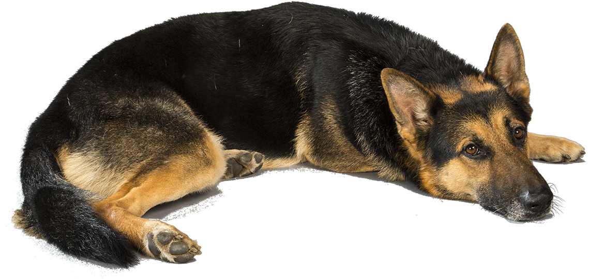

A loyal and playful dog breed. Stares you most of the time, and always ask permission to play or doing something outside
The German Shepherd, also known in Britain as an Alsatian, is a German breed of working dog of medium to large size. The breed was developed by Max von Stephanitz using various traditional German herding dogs from 1899.
It was originally bred as a herding dog, for herding sheep. It has since been used in many other types of work, including disability assistance, search-and-rescue, police work, and warfare. It is commonly kept as a companion dog
Visit German Shepherd Forum, a forum community dedicated to all German Shepherd owners and enthusiasts. Come join the discussion about bloodlines, training, breeding, service dogs, and more!